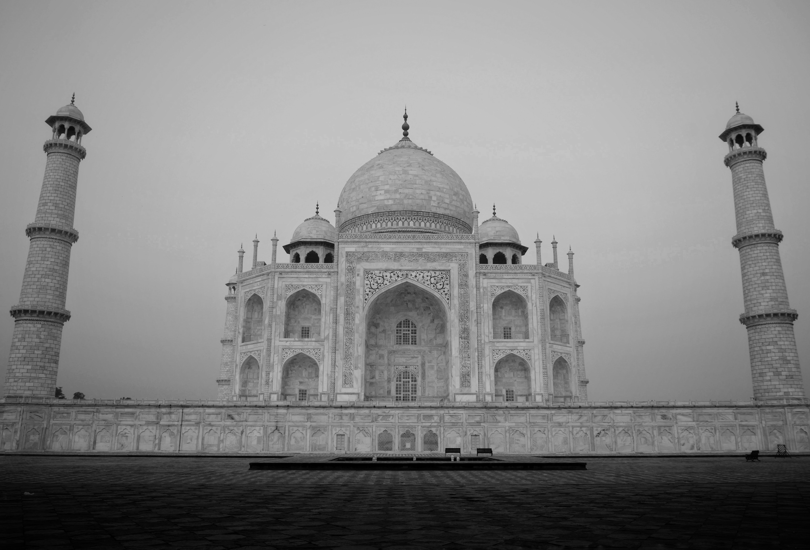

The Taj Mahal: An Icon of Eternal Love and Architectural Grandeur
The Taj Mahal, a masterpiece of architectural beauty, stands as a testament to the power of love and human
ingenuity. Located in Agra, India, this iconic white marble mausoleum is celebrated worldwide for its
exquisite design and historical significance.
Commissioned by the Mughal Emperor Shah Jahan in the 17th century, the Taj Mahal was built as a tribute to
his beloved wife, Mumtaz Mahal. She passed away during childbirth, and Shah Jahan was grief-stricken. In his
mourning, he envisioned a monument that would immortalize their love and devotion. Thus, the Taj Mahal was
born.
Architecturally, the Taj Mahal is a marvel. It blends elements of Persian, Islamic, and Indian styles,
creating a harmonious fusion of cultural influences. Its pure white marble façade is adorned with intricate
carvings, including delicate floral patterns and Quranic inscriptions. The central dome, reaching a height
of 73 meters (240 feet), is a masterpiece of symmetrical perfection.
One of the most enchanting features of the Taj Mahal is the play of light on its surface. At different times
of the day, the monument takes on various shades, from a soft pinkish hue in the morning to a brilliant
white during the day and a mesmerizing golden glow at sunset. This phenomenon reflects the changing moods of
the emperor, mirroring his deep love and profound sorrow.
The Taj Mahal is surrounded by meticulously landscaped gardens, divided into quadrants by water channels,
symbolizing the paradise described in Islamic tradition. The reflection of the Taj in the central pool
creates a breathtaking sight, adding to the monument's allure.
Beyond its aesthetic beauty, the Taj Mahal has a rich historical and cultural significance. It stands as a
symbol of enduring love, a reminder that love transcends time and death. Its inclusion on the UNESCO World
Heritage List further underscores its global importance.
Visitors from all corners of the world flock to the Taj Mahal to witness its magnificence. It has inspired
poets, artists, and lovers for centuries, leaving an indelible mark on human history and culture. In fact,
it is often regarded as one of the Seven Wonders of the World, a testament to its enduring appeal.
In conclusion, the Taj Mahal is not merely a structure; it is a profound expression of love, a triumph of
architectural brilliance, and a timeless masterpiece. Its enduring beauty continues to captivate the hearts
and minds of people worldwide, making it an eternal symbol of love's power to move mountains and create
something truly extraordinary. The Taj Mahal stands as an embodiment of Shah Jahan's love for Mumtaz Mahal
and as an everlasting tribute to their love story, etched in stone for all to admire and cherish.
WIKI